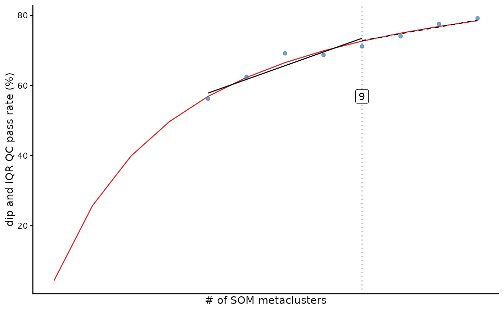

Runs iterative metaclustering, marker-unimodality testing, and
inflection point determination. The exported function is named INFLECT()
for continuity with the original INFLECT API; the package uses a memoised
engine that avoids the original repeated per-k QC loop.
By default, fewer cluster numbers are evaluated at higher k, zero-valued
events are excluded, and the inflection point is computed on the fitted curve.
Usage
INFLECT(
FlowSOM.results,
set.i = c(150, 200),
multicore = TRUE,
cores = NULL,
zeroes.in = FALSE,
only.clustering.markers = TRUE,
acquired_markers = NULL,
basedata = "Curve",
ggtitle = NULL,
uniform.test = c("both", "spread", "unimodality"),
th.pvalue = 0.05,
th.IQR = 2,
verbose = FALSE,
max.n.diptest = NULL,
seed = 1L,
target = 0.95,
...
)Arguments
- FlowSOM.results
A supported SOM object with completed SOM clustering. Supports FlowSOM objects and kohonen objects returned by
somorxyf.- set.i
Vector containing either the desired iterations to be tested, or if
length(set.i)==2, the point where iterations are spaced apart by 5 or 10. Intended to limit computation time- multicore
logical, should the QC sweep be run in parallel (fork-based
mclapplyover distinct SOM-node subtrees on Unix). Ignored on Windows.- cores
If
multicore == TRUE, number of cores to be used. IfNULLmax number of cores-1 is used- zeroes.in
Should values at and below
0be included. Recommended default isFALSE- only.clustering.markers
If
TRUEonly evaluates markers specified as clustering markers. For kohonen objects this is the first data layer.- acquired_markers
Vector of column names with marker data to be evaluated by fastINFLECT. Ignored if
only.clustering.markers == TRUE- basedata
Data to be used to calculate inflection point, given as a string. Options are
CurveandPoints- ggtitle
Optional title for resulting diagnostic graph. Default
NULL- uniform.test
What tests are performed per marker per cluster. Options are
"both","spread", or"unimodality".- th.pvalue
Threshold for rejecting the unimodality dip.test result. Default is
0.05.- th.IQR
Threshold for rejecting marker distribution based on inter-quartile range. Default is arc-sinh transformed value of
2.- verbose
logical, default isFALSE.- max.n.diptest
Optional integer cap on the number of events used per (cluster, marker) dip test. Because the dip test's power grows with sample size, large clusters otherwise reject unimodality for negligible deviations, biasing the score. Setting a cap (e.g.
2000) makes the score size-robust. Subsampling is seeded and deterministic. DefaultNULLpreserves the legacy scoring path.- seed
Integer base seed for the optional
max.n.diptestsubsampling. Default1L.- target
Target unimodality (fraction in
(0,1]or percentage in(1,100]) used to report the smallest k with no residual bimodal clusters. Default0.95. Seeinflect_threshold_k.- ...
Value
An S3 inflect.results object containing a dataframe with Unimodality scores, a dataframe with the fitted curve, the Lfunction results, the diagnostic ggplot2 plot, the list of metaclusterings performed during iteration.metacluster, a list of accuracy matrices generated by FlowSOMQC, and a selection data frame giving the recommended number of metaclusters under three criteria (LL.4 inflection, inflect_kneedle knee, and the inflect_threshold_k target).
Running the individual function iteration.metacluster and QC.to.curve might provide more options and flexibility.
Examples
# Read in FlowSOM object from file. Downsampled clustering result of Levine32 dataset clustering.
# SOM-clustered to 375 clusters.
flowsom <- system.file("extdata", "Levine32sample.Rdata", package="fastINFLECT")
load(flowsom)
set.i<- 5:12
inflect.results<- INFLECT(FlowSOM.results= dataset, set.i= set.i, multicore=FALSE, zeroes.in=FALSE)
#> Warning: Warning: Number of points in set.i is low, beware of noisy diagnostic curves
# Display diagnostic graph
inflect.results$ggplot
